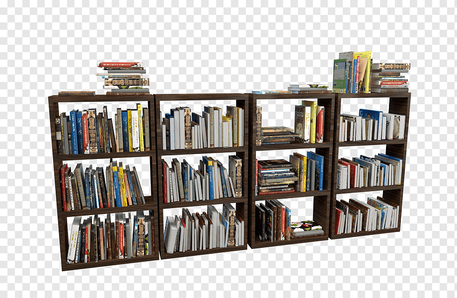

| Biblioteca | Descrição | Comprar |
|---|---|---|
|  |
Estamos empolgados em apresentar a você o nosso espaço digital dedicado ao amor pelos livros e pelo conhecimento. Aqui, você encontrará um vasto acervo de recursos, tudo ao seu alcance, a qualquer hora e em qualquer lugar. |
|
|
Os e-books e outros formatos de leitura digital oferecem funcionalidades que não estão disponíveis com livros impressos. Você pode ajustar o tamanho da fonte, o brilho da tela e o fundo, tornando a leitura mais confortável e adaptada às suas necessidades. Além disso, recursos como anotações, destaques e pesquisa de texto tornam a leitura mais interativa e eficaz, permitindo que você encontre e revisite informações facilmente. |
||
|
Comprar eBooks na nossa Biblioteca Virtual é um processo ágil e conveniente, projetado para garantir que você possa adquirir e acessar suas leituras favoritas com facilidade. Aproveite a vasta seleção e explore novos mundos com apenas alguns cliques! |